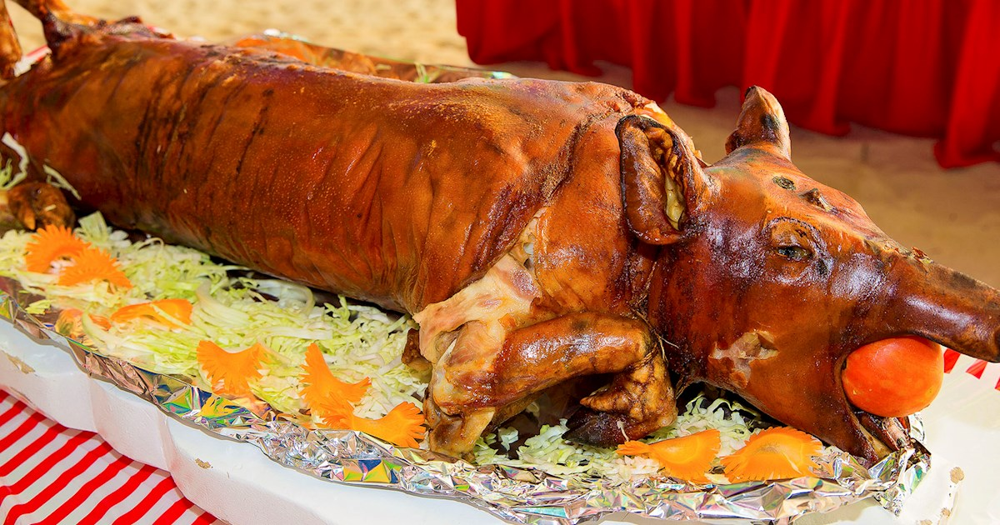

Adobo

A savory stew made with meat, vinegar, soy sauce, garlic, and spices. A timeless classic loved by all Filipinos.
Adobo is a classic Filipino dish made with either chicken or pork marinated in a savory mixture of soy sauce, vinegar, garlic, and spices. The meat is simmered until tender, creating a flavorful and aromatic stew that is a staple in Filipino households.
Sinigang

A comforting soup known for its sour and savory flavors, often made with tamarind and fresh vegetables.
Sinigang is a comforting Filipino soup known for its sour, savory, and refreshing flavor. Typically made with pork or shrimp, the dish features tamarind as the base for its tangy broth, complemented by vegetables like kangkong (water spinach), radish, and eggplant.
Lechon
Whole roasted pig with crispy skin and tender meat, perfect for celebrations and fiestas.
Lechon is a beloved Filipino delicacy that consists of a whole roasted pig, seasoned with a mix of spices, and cooked until the skin is perfectly crispy. It’s often served at major celebrations like fiestas and family gatherings, where it’s the centerpiece of the feast.
Kare-Kare

A rich peanut-based stew with oxtail, vegetables, and shrimp paste on the side.
Kare-Kare is a rich and creamy peanut-based stew that traditionally includes oxtail, tripes, and a variety of vegetables such as eggplant, banana heart, and string beans. It’s typically served with bagoong (fermented shrimp paste) on the side to add a savory kick to the dish.
Halo-Halo
A refreshing dessert of shaved ice, sweetened beans, jellies, fruits, and a scoop of ube ice cream.
Halo-Halo is a refreshing Filipino dessert, especially popular during the hot summer months. It’s made by layering shaved ice with sweetened fruits, jellies, beans, and leche flan, and topped with a scoop of ube (purple yam) ice cream for a delightful mix of textures and flavors.
Pancit

Stir-fried noodles with a mix of vegetables, meat, and seafood. A symbol of long life and prosperity.
Pancit is the general term for Filipino noodle dishes, with each region offering its own variation. A common type is Pancit Canton, which features stir-fried egg noodles with a combination of vegetables, meat, and seafood. Pancit is often served during celebrations to symbolize long life and good fortune.
Bibingka
A traditional rice cake baked in banana leaves, topped with salted egg and cheese.
Bibingka is a traditional Filipino rice cake made from rice flour and coconut milk, then baked in banana leaves. It’s often topped with salted egg and cheese, giving it a perfect balance of savory and sweet flavors. Bibingka is a popular treat during the Christmas season.
Turon

Sweet and crunchy banana spring rolls coated with caramelized sugar. A delightful snack!
Turon is a popular Filipino snack made by wrapping sweet bananas (usually saba bananas) and jackfruit in spring roll wrappers, then frying them until crispy and caramelized. This simple yet satisfying snack is often served as a street food delight. These descriptions add more context to the dishes, highlighting their flavors and cultural significance.